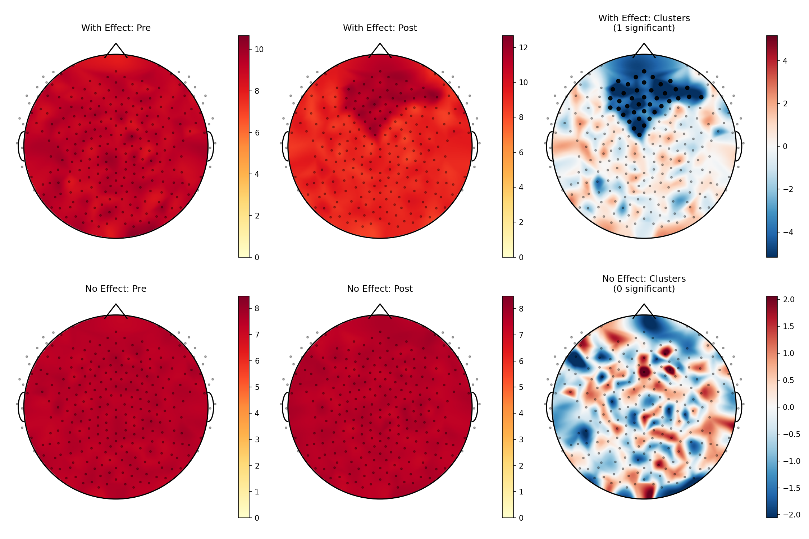

EEG Topographic Analysis
A Python package for EEG topographic mapping and cluster-based permutation testing.
Overview
eegtopo is a pip-installable Python package designed for creating publication-quality topographic maps and performing cluster-based permutation testing on EEG data. It features a simple DataFrame interface—just bring your data, no complex setup required.
Key Features
- Publication-quality topographic maps with customizable colormaps and head outlines
- Cluster-based permutation testing with automatic spatial adjacency detection
- Simple DataFrame interface compatible with pandas
- Support for multiple montages including standard 10-20, EGI 128/256, and custom configurations
- Significance highlighting overlaid on topographic maps
Example Results
Top row: Dataset with significant frontal alpha effect (GSN-HydroCel-256). Bottom row: Null data showing no significant clusters.
Installation & Usage
Installation:
pip install eegtopoQuick Start:
import pandas as pd
from eegtopo import TopographicAnalysis, run_cluster_analysis
# Your data - just needs subject, channel, value, and condition columns
df = pd.DataFrame({
'subject': ['sub-01', 'sub-01', 'sub-02', 'sub-02', ...],
'channel': ['E1', 'E1', 'E1', 'E1', ...],
'condition': ['pre', 'post', 'pre', 'post', ...],
'power': [1.2, 2.3, 1.1, 2.1, ...]
})
# Method 1: One-shot analysis
results = run_cluster_analysis(
df,
condition_a='pre',
condition_b='post',
value_col='power',
plot=True,
save_path='results.png'
)
print(f"Found {results['results'].n_sig_clusters} significant clusters")
print(results['results'].summary())
)References
This package implements methods described in the following key publications on cluster-based permutation testing and EEG topographical analysis:
- Maris, E., & Oostenveld, R. (2007). Nonparametric statistical testing of EEG- and MEG-data. Journal of Neuroscience Methods, 164(1), 177-190. https://doi.org/10.1016/j.jneumeth.2007.03.024
- Pernet, C. R., Latinus, M., Nichols, T. E., & Rousselet, G. A. (2015). Cluster-based computational methods for mass univariate analyses of event-related brain potentials/fields: A simulation study. Journal of Neuroscience Methods, 250, 85-93. https://doi.org/10.1016/j.jneumeth.2014.08.003
- Oostenveld, R., Fries, P., Maris, E., & Schoffelen, J. M. (2011). FieldTrip: Open source software for advanced analysis of MEG, EEG, and invasive electrophysiological data. Computational Intelligence and Neuroscience, 2011, 156869. https://doi.org/10.1155/2011/156869